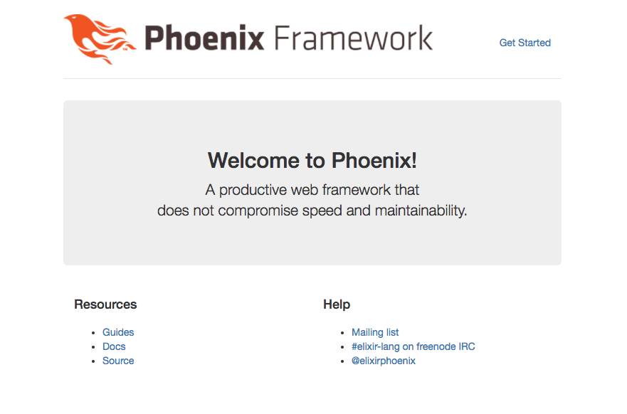

Up and Running
The aim of this first guide is to get a Phoenix application up and running as quickly as possible.
Before we begin, please take a minute to read the Installation Guide. By installing any necessary dependencies beforehand, we'll be able to get our application up and running smoothly.
At this point, we should have Elixir, Erlang, Hex, and the Phoenix archive installed. We should also have PostgreSQL and node.js installed to build a default application.
Ok, we're ready to go!
We can run mix phx.new from any directory in order to bootstrap our Phoenix application. Phoenix will accept either an absolute or relative path for the directory of our new project. Assuming that the name of our application is hello, let's run the following command:
$ mix phx.new helloA note about webpack before we begin: Phoenix will use webpack for asset management by default. Webpack's dependencies are installed via the node package manager, not mix. Phoenix will prompt us to install them at the end of the
mix phx.newtask. If we say "no" at that point, and if we don't install those dependencies later withnpm install, our application will raise errors when we try to start it, and our assets may not load properly. If we don't want to use webpack at all, we can simply pass--no-webpacktomix phx.new.
A note about Ecto: Ecto allows our Phoenix application to communicate with a data store, such as PostgreSQL, MySQL, and others. If our application will not require this component we can skip this dependency by passing the
--no-ectoflag tomix phx.new. This flag may also be combined with--no-webpackto create a skeleton application.
To learn more about
mix phx.newyou can read the Mix Tasks Guide.
mix phx.new hello
* creating hello/config/config.exs
* creating hello/config/dev.exs
* creating hello/config/prod.exs
...
* creating hello/assets/static/images/phoenix.png
* creating hello/assets/static/favicon.ico
Fetch and install dependencies? [Yn]Phoenix generates the directory structure and all the files we will need for our application. When it's done, it will ask us if we want it to install our dependencies for us. Let's say yes to that.
Fetch and install dependencies? [Yn] Y
* running mix deps.get
* running mix deps.compile
* running cd assets && npm install && node node_modules/webpack/bin/webpack.js --mode development
We are almost there! The following steps are missing:
$ cd hello
Then configure your database in config/dev.exs and run:
$ mix ecto.create
Start your Phoenix app with:
$ mix phx.server
You can also run your app inside IEx (Interactive Elixir) as:
$ iex -S mix phx.serverOnce our dependencies are installed, the task will prompt us to change into our project directory and start our application.
Phoenix assumes that our PostgreSQL database will have a postgres user account with the correct permissions and a password of "postgres". If that isn't the case, please see the Mix Tasks Guide to learn more about the mix ecto.create task.
Ok, let's give it a try. First, we'll cd into the hello/ directory we've just created:
$ cd helloNow we'll create our database:
$ mix ecto.create
Compiling 13 files (.ex)
Generated hello app
The database for Hello.Repo has been createdNote: if this is the first time you are running this command, Phoenix may also ask to install Rebar. Go ahead with the installation as Rebar is used to build Erlang packages.
And finally, we'll start the Phoenix server:
$ mix phx.server
[info] Running HelloWeb.Endpoint with cowboy 2.5.0 at http://localhost:4000
Webpack is watching the files…
...If we choose not to have Phoenix install our dependencies when we generate a new application, the mix phx.new task will prompt us to take the necessary steps when we do want to install them.
Fetch and install dependencies? [Yn] n
We are almost there! The following steps are missing:
$ cd hello
$ mix deps.get
$ cd assets && npm install && node node_modules/webpack/bin/webpack.js --mode development
Then configure your database in config/dev.exs and run:
$ mix ecto.create
Start your Phoenix app with:
$ mix phx.server
You can also run your app inside IEx (Interactive Elixir) as:
$ iex -S mix phx.serverBy default Phoenix accepts requests on port 4000. If we point our favorite web browser at http://localhost:4000, we should see the Phoenix Framework welcome page.

If your screen looks like the image above, congratulations! You now have a working Phoenix application. In case you can't see the page above, try accessing it via http://127.0.0.1:4000 and later make sure your OS has defined "localhost" as "127.0.0.1".
Locally, our application is running in an iex session. To stop it, we hit ctrl-c twice, just as we would to stop iex normally.
The next step is customizing our application just a bit to give us a sense of how a Phoenix app is put together.